La gran diferencia que existe entre los dispositivos pasivos y los activos, es
que en el caso de los pasivos son aquellos que reciben energía y los activos
son los que generan energía, generalmente los dispositivos activos, están
compuestos de la unión de varios elementos pasivos, a los dispositivos activos
los podemos clasificar:
• Fuentes Independientes de Corriente:
– Mantienen una corriente específica Independientemente del voltaje a través
de sus terminales.
• Fuentes Independientes de Voltaje:
– Mantienen un voltaje específico independientemente de la corriente que
pase por sus terminales.
• Fuentes Dependientes:
– Su salida depende de algún voltaje o corriente de alguna parte del
circuito.
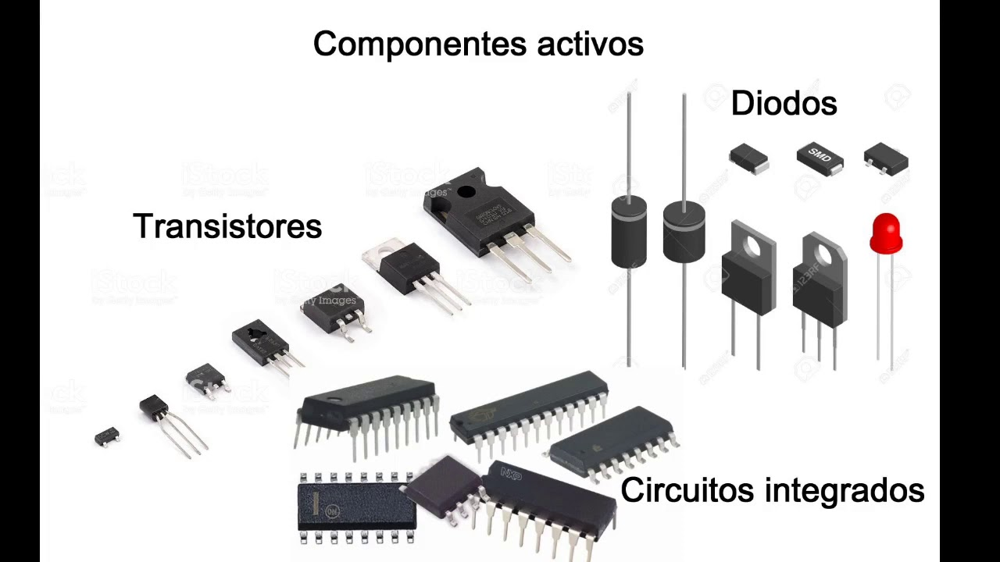
Un semiconductor se puede dopar para que tenga un exceso de electrones libres
o un exceso de huecos. Debido a ello existen dos tipos de semiconductores
dopados. Los semiconductores tipo N y tipo P.
-Semiconductor tipo N: el silicio que ha sido dopado con una impureza pentavalente
se llama semiconductor tipo N, donde n hace referencia a negativo.
Como los electrones superan a los huecos
en un semiconductor tipo N, reciben el nombre de portadores mayoritarios,
mientras que a los huecos se les denomina portadores minoritarios.
-Semiconductor tipo P:
el silicio ha sido dopado con impurezas trivalentes se llama semiconductor tipo P
donde la p hace referencia a positivo. La Figura 41 representa a un semiconductor
tipo P. Como él número dé huecos supera al número de electrones libres, los
huecos son los portadores mayoritarios y los electrones libres son los minoritarios.
Al aplicarse una tensión, los electrones libres se mueven hacia la izquierda y los
huecos lo hacen hacia la derecha.
Los semiconductores tipo p y tipo n separados no tienen mucha utilidad, pero si un
cristal se dopa de tal forma que una mitad sea tipo N y la otra mitad de tipo P, esa
unión PN tiene unas propiedades muy útiles y entre otras cosas forman los
"Diodos".
El átomo pentavalente en un cristal de silicio (Si) produce un electrón libre y se
puede representar como un signo "+" encerrado en un circulo y con un punto
relleno (que sería el electrón) al lado. El átomo trivalente sería un signo "-"
encerrado en un circulo y con un punto sin rellenar al lado (que
simbolizaría un hueco). Al juntar las regiones tipo p y tipo n se crea un "Diodo de unión" o "Unión
PN".
Unión PN polarizada en directo Si se polariza la unión PN en sentido directo, es
decir, el polo positivo de la pila a la región P y el polo negativo a la región N, la
tensión U de la pila contrarresta la «barrera de potencial» creada por la
distribución espacial de cargas en la unión, desbloqueándola, y apareciendo una
circulación de electrones de la región N a la región P y una circulación de huecos
en sentido contrario.
Tenemos así una corriente eléctrica de valor elevado, puesto que la unión PN se
hace conductora, presentando una resistencia eléctrica muy pequeña.
Los diodos constan de dos partes, una llamada N y la otra llamada P, separados
por una juntura llamada barrera o unión. Esta barrera o unión es de 0.3 voltios en
el diodo de germanio y de 0.6 voltios aproximadamente en el diodo de silicio.
El diodo al no ser polarizado tiene las siguientes características
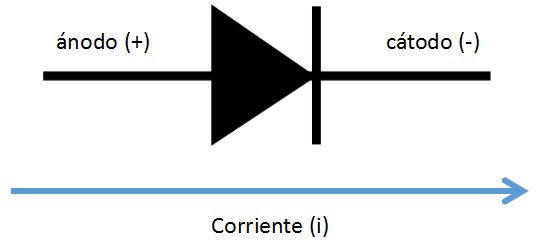
El LED es un tipo especial de diodo, que trabaja como un diodo común, pero que al ser atravesado por la corriente eléctrica, emite luz. Existen diodos LED de varios colores que dependen del material con el cual fueron construidos. Hay de color rojo, verde, amarillo, ámbar, infrarrojo, entre otros.
Un diodo rectificador es uno de los dispositivos de la familia de los diodos más sencillos. El nombre diodo rectificador” procede de su aplicación, la cual consiste en separar los ciclos positivos de una señal de corriente alterna. Si se aplica al diodo una tensión de corriente alterna durante los medios ciclos positivos, se polariza en forma directa; de esta manera, permite el paso de la corriente eléctrica. Pero durante los medios ciclos negativos, el diodo se polariza de manera inversa; con ello, evita el paso de la corriente en tal sentido.
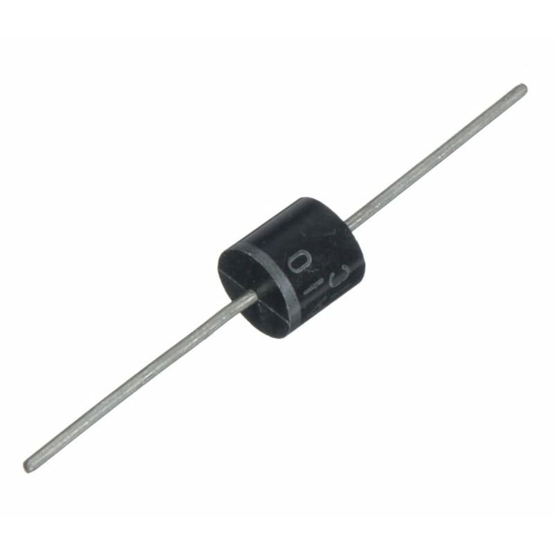
Practica con Diodo rectificador
El diodo zener es un tipo especial de diodo, que a diferencia del funcionamiento de los diodos comunes, como el diodo rectificador (en donde se aprovechan sus características de polarización directa y polarización inversa) siempre se utiliza polarizado inversamente
Transistor bipolar. El transistor bipolar de uniones, conocido también por BJT
(siglas de su denominación inglesa Bipo-lar Junction Transistor), es un dispositivo
de tres terminales denominados emisor, base y colector.
Los transistores están constituidos por tres partes esenciales; se trata de un
arreglo de tres capas de material semiconductor: dos de un tipo de material a los
lados de otra del material complementario. Existen dos versiones principales de
transistores, por el material que los constituye: N P N, y P N P; cada una de las
capas de material con características muy distintas a las otra dos. Las diferencias
son en dopado, tamaño y forma.
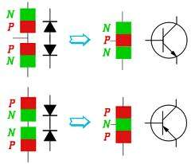
El tiristor es un semiconductor de potencia que se utiliza como interruptor,
ya sea para conducir o interrumpir la corriente eléctrica, a este componente
se le conoce como de potencia por que se utilizan para manejar grandes cantidades
de corriente y voltaje, a comparación de los otros semiconductores que manejan cantidades
relativamente bajas.
Cuando se habla de tiristores comúnmente se cataloga al tiristor como un SRC
(silicon controlled rectifier),pero esto no es del todo correcto ya que este
tipo es el más popular y conocido pero no es el único que existe.
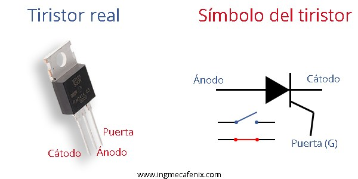
El miembro más importante de la familia de los tiristores es el tiristor de tres terminales, conocido también como el rectificador controlado de silicio o SCR. Este dispositivo lo desarrolló General Electric en 1958 y lo denominó SCR. El nombre de tiristor lo adoptó posteriormente la Comisión Electrotécnica Internacional (CEI).
Es un tipo de tiristor que puede conducir en los dos sentidos. Es un dispositivo de dos terminales que funciona básicamente como dos diodos Shockley que conducen en sentidos opuestos. La curva de funcionamiento refleja claramente el comportamiento del DIAC, que funciona como un diodo Shockley tanto en polarización directa como en inversa.
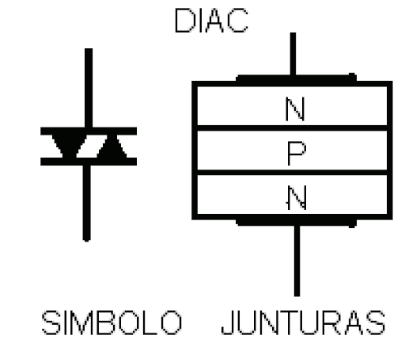
Es un dispositivo que se comporta como dos SCR conectados en contraposición, con una compuerta de paso común; puede ir en cualquier dirección desde el momento en que el voltaje de ruptura se sobrepasa.
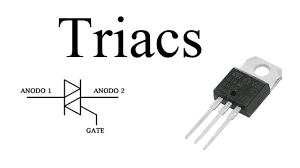
Un amplificador operacional, a menudo conocido op-amp por sus siglas en inglés (operational amplifier) es un dispositivo amplificador electrónico de alta ganancia acoplado en corriente continua que tiene dos entradas y una salida. En esta configuración, la salida del dispositivo es, generalmente, de cientos de miles de veces mayor que la diferencia de potencial entre sus entradas.
Un amplificador sumador es un circuito electrónico creado por medio de amplificadores operacionales el cual
esta en capacidad de sumar o unir dos señales de entrada y unirlas en una sola a la salida.
El voltaje de salida de un sumador inversor es:
Vout=V1(-Rf/R1)+V2(-Rf/R2)
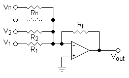
Como se puede observar el diagrama de el amplificador sumador se puede ver que es un amplificador sumador pero inversor ya que básicamente su señal de entrada se encuentra por el pin negativo para lograr que sea un sumador no inversor se debe conectar a el pin positivo de entrada
Este amplificador usa ambas entradas invertida y no invertida con una ganancia de uno, para producir una salida igual a la diferencia entre las entradas. Es un caso especial del amplificador diferencial. Se pueden elegir tambien las resistencias para amplificar la diferencia.
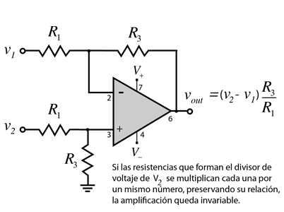
Un amplificador integrador realiza la función matemática de la integración es decir la señal de salida es la integral de la señal de entrada. El circuito es como se muestra a continuación:
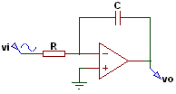
La ecuación de salida es la siguiente:
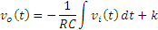